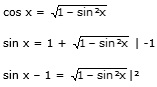

Aufgabe 230 sin x = 1 + cos x

(sin x – 1)2 = 1 – sin2 x sin2 x – 2 * sin x + 1 = 1 – sin2 x | +sin2 x 2 * sin2 x – 2 * sin x + 1 = 1 |-1 2 * sin2 x – 2 * sin x = 0 2 * sin * (sin x – 1) = 0 2 * sin x = 0 --> x = 0° oder 180° oder 360° sin x – 1 = 0 | +1 sin x = 1 --> x = 90° Da auf dem Weg zur Lösung quadriert wurde, könnten Lösungen hinzugekommen sein. Deswegen muss zwingend eine Probe gemacht werden. Probe: 0° sin 0° = 1 + cos 0° 0 = 1 + 1 = 2 Widerspruch, keine Lösung 90° sin 90° = 1 + cos 90° 1 = 1 + 0 = 1 180° sin 180° = 1 + cos 180° 0 = 1 + (-1) = 0 Lösungsmenge L = {90°, 180°}